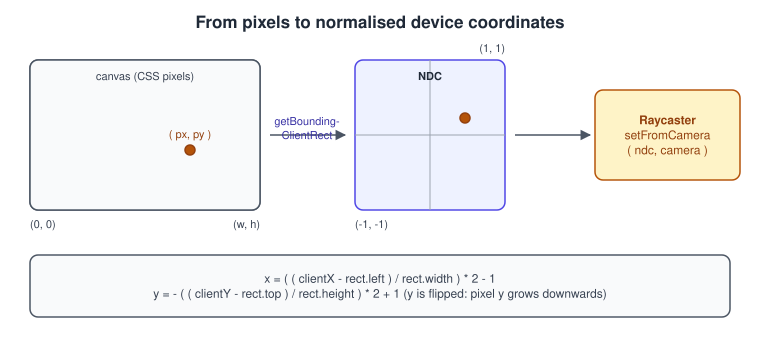
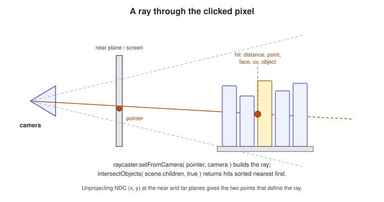
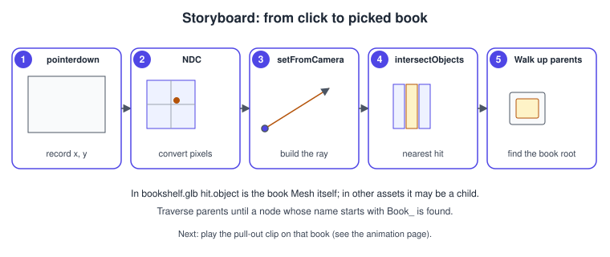
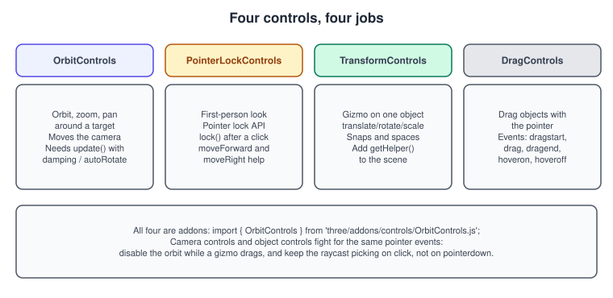
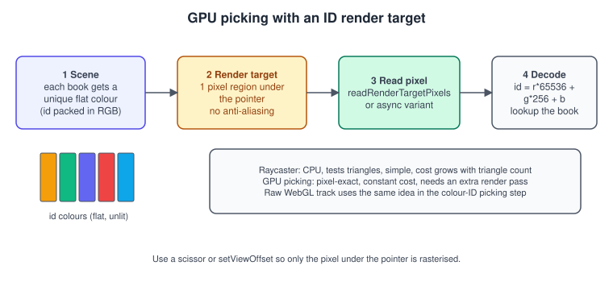

three.js Interaction, Picking and Controls
|
This content was generated with the assistance of AI and should be verified against the official documentation before being relied on in production. |
A rendered scene is only a picture until the user can act on it: orbit around it, point at an object, click a book and see it react.
three.js has two separate toolboxes for that, and this page covers both. Controls move the camera (or an object) in response to
input: OrbitControls, PointerLockControls, TransformControls, DragControls. Picking answers the question "which object is
under this pixel?": the CPU Raycaster, or the GPU trick of rendering object IDs as colours. The two meet in the Bookshelf example, where
a click must choose a book without being confused with the drag that orbits the camera.
The facts were checked in November 2026. The documented version is three.js r187 (three@0.187.0, published 2026-10-30). The
Raycaster is in the core three module; every control class is an addon imported from three/addons/controls/. Both work
identically with WebGLRenderer and WebGPURenderer, because they work with the camera, the scene graph and DOM events rather than with the
GPU API (the exception is GPU picking, shown near the end with WebGLRenderer). The examples are ES modules for a Vite project
and run in any browser with WebGL 2. Where this page fits in the Bookshelf three.js track: after the model is loaded
(Loading Models: glTF) and lit
(Materials and PBR), the camera gets OrbitControls, a click picks a book
with Raycaster, the book plays the pull-out clip from the
animation page, and then the "catch the falling books" game uses the pointer to move a
bookend with an HTML score overlay. The same colour-ID idea in plain WebGL is the picking step of the raw WebGL track
(see Framebuffers and Render to Texture); the camera maths behind
the ray is in Transforms and Cameras and
Coordinate Spaces and Transforms.
From pointer to ray
Pointer events
Use pointer events (pointerdown, pointermove, pointerup, pointercancel) rather than separate mouse and touch events: one code
path handles mouse, pen and finger, and event.pointerId tells simultaneous touches apart. The browser event system is described in
Browser Events. Three practical rules:
-
Listen on the canvas (
renderer.domElement), not onwindow, so that clicks on the HTML overlay do not pick through it. -
Set
touch-action: noneon the canvas (CSS), otherwise a finger drag scrolls the page instead of reaching your handler. -
Convert coordinates relative to the canvas rectangle, never to the window, because the canvas is rarely at the page origin and is often scaled by CSS.
Normalised device coordinates

Raycaster.setFromCamera( coords, camera ) takes the pointer in normalised device coordinates: x and y between -1 and 1, with
(-1, -1) at the bottom left. Browsers give pixels with y growing downwards, so y is flipped. The conversion is
\[ x_{ \mathrm{ ndc } } = 2\,\frac{ x_{ \mathrm{ px } } - x_0 }{ w } - 1, \qquad y_{ \mathrm{ ndc } } = 1 - 2\,\frac{ y_{ \mathrm{ px } } - y_0 }{ h } \]
where \( x_0, y_0 \) is the canvas top-left corner and \( w, h \) its CSS size (not the drawing-buffer size, which is multiplied by
devicePixelRatio).
const pointer = new THREE.Vector2();
/** Writes the NDC position of a pointer event into `out` (defaults to the shared vector). */
export function eventToNdc(event, canvas, out = pointer) {
const rect = canvas.getBoundingClientRect();
out.x = ((event.clientX - rect.left) / rect.width) * 2 - 1;
out.y = -((event.clientY - rect.top) / rect.height) * 2 + 1;
return out;
}Source: three.js docs: Raycaster
The Raycaster

A Raycaster holds a Ray (origin and direction) and tests it against objects. setFromCamera( ndc, camera ) unprojects the
point at the near and far planes and builds the ray through them; for an orthographic camera the rays are parallel, for a perspective
camera they fan out from the eye. set( origin, direction ) builds a ray by hand (with a normalised direction), for example from a
bullet or a sensor.
Options
| Member | Default | Meaning |
|---|---|---|
|
|
Only hits whose distance is between the two are returned. Setting |
|
layer 0 |
A |
|
|
Distance in world units within which a ray hits a |
|
|
The same for |
|
|
Reserved per-type parameters. |
|
|
Set by |
|
- |
The underlying |
Methods and results
-
intersectObject( object, recursive = true, target = [] )tests one object and, whenrecursive, all its descendants. -
intersectObjects( objects, recursive = true, target = [] )tests an array of roots.
Both return an array sorted by distance, nearest first. Passing the target array lets you reuse one allocation per frame.
| Result field | Meaning |
|---|---|
|
Distance from the ray origin to the hit point. |
|
Hit point in world coordinates. |
|
The |
|
The intersected triangle (vertex indices and face normal) and its index. |
|
Texture coordinates at the hit (first and second set). Lets you click on a texture, for example a button painted on a cover. |
|
Interpolated surface normal at the hit. |
|
Instance index when the object is an |
|
Instance index for a |
|
For |
What the ray can and cannot hit
-
Single-sided materials are only hit from the front. Meshes are tested against faces that point towards the ray origin. To click both sides (or to pick from inside a room) set
material.side = THREE.DoubleSide, or accept that back faces are transparent to picking. -
Invisible objects are still tested.
visible = falsehides rendering, not picking by default; use layers to exclude objects, or skip them in your handler. Hidden children of a visible object are tested too. -
Matrices must be up to date. Raycasting uses
matrixWorld; if you moved an object this frame and picked before the renderer calledupdateMatrixWorld, callobject.updateWorldMatrix( true, false )first. -
Instanced meshes need
instanceId. OneInstancedMeshof 10,000 books is a singleobject; readhit.instanceIdto know which one. -
A ray along an edge shared by two triangles can return two coincident hits. Compare distances, or take only the first result.
-
Vertex-shader displacement is invisible to the ray. A custom vertex shader that moves vertices (waves, wind) is not seen by the CPU test, which uses the stored geometry; picking can be wrong for strongly displaced meshes. Use a simplified proxy collider or GPU picking.
-
Cost grows with the number of triangles tested: a bounding-sphere test rejects most objects quickly, but one dense mesh without an acceleration structure is still a linear scan. For large models use a low-poly proxy on a pick-only layer, or a bounding-volume hierarchy library (third-party, for example
three-mesh-bvh, which is not part of three.js).
Example: click to pull out a book
This module combines everything so far: canvas-relative coordinates, a drag threshold so that an OrbitControls drag is not a click, layers to
limit picking to books, a walk up the parents to find the book root, and the BookPuller from the animation page.
import * as THREE from 'three';
import { eventToNdc } from './ndc.js';
const BOOK_LAYER = 1;
const CLICK_MAX_PIXELS = 5; // moved less than this between down and up = a click
const CLICK_MAX_MS = 400;
/**
* Enables the pickable layer on every book and returns a function that finds the book under a pointer event.
*/
export function createBookPicker(scene, camera, canvas) {
const raycaster = new THREE.Raycaster();
raycaster.layers.set(BOOK_LAYER);
const ndc = new THREE.Vector2();
const hits = [];
scene.traverse((node) => {
if (node.name.startsWith('Book_')) node.layers.enable(BOOK_LAYER);
});
return function pick(event) {
eventToNdc(event, canvas, ndc);
raycaster.setFromCamera(ndc, camera);
hits.length = 0;
raycaster.intersectObjects(scene.children, true, hits);
if (hits.length === 0) return null;
// Walk up until a node named Book_* is found (in bookshelf.glb the mesh itself is named Book_*).
let node = hits[0].object;
while (node && !node.name.startsWith('Book_')) node = node.parent;
return node ? { book: node, hit: hits[0] } : null;
};
}
/** Calls onClick( event ) only for a short press that did not move: orbit drags are ignored. */
export function onCanvasClick(canvas, onClick) {
let down = null;
canvas.addEventListener('pointerdown', (e) => {
if (e.button !== 0) return;
down = { x: e.clientX, y: e.clientY, t: performance.now() };
});
canvas.addEventListener('pointerup', (e) => {
if (!down) return;
const moved = Math.hypot(e.clientX - down.x, e.clientY - down.y);
const elapsed = performance.now() - down.t;
down = null;
if (moved <= CLICK_MAX_PIXELS && elapsed <= CLICK_MAX_MS) onClick(e);
});
canvas.addEventListener('pointercancel', () => { down = null; });
}// main.js (excerpt): wiring picking, controls and the pull-out animation
import { createBookPicker, onCanvasClick } from './picker.js';
import { BookPuller } from './book-puller.js';
const pickBook = createBookPicker(scene, camera, renderer.domElement);
const pullers = new Map(); // book node -> BookPuller
onCanvasClick(renderer.domElement, (event) => {
const result = pickBook(event);
if (!result) return;
let puller = pullers.get(result.book);
if (!puller) {
puller = new BookPuller(result.book);
pullers.set(result.book, puller);
}
puller.toggle();
});Source: three.js docs: Raycaster and three.js docs: Layers

Hover feedback
Pointer move picking runs every move event, so throttle it to once per frame and reuse the arrays:
let pending = null;
canvas.addEventListener('pointermove', (e) => { pending = e; });
renderer.setAnimationLoop((timestamp) => {
if (pending) {
const result = pickBook(pending);
pending = null;
setHovered(result ? result.book : null); // e.g. raise emissive, change cursor
}
renderer.render(scene, camera);
});
function setHovered(book) {
canvas.style.cursor = book ? 'pointer' : 'auto';
}Source: three.js docs: Raycaster
On touch screens there is no hover; design the interaction so that a tap does the work.
Camera controls
All controls share a pattern: construct with the object and the DOM element, call update() each frame if the control needs it, listen for
change, and dispose() them when you discard the scene. They are addons because they are optional code, and each needs its own import.

OrbitControls
OrbitControls orbits the camera around a target point, dollies (zooms) and pans, and keeps the camera’s up vector stable. Defaults: orbit with the left
mouse button or a one-finger drag, zoom with the wheel or a pinch, pan with the right button, Ctrl/Meta/Shift plus left button, the arrow keys, or a
two-finger drag.
| Property | Default | Effect |
|---|---|---|
|
|
The point the camera looks at and orbits. Move it to frame the shelf, then call |
|
|
Inertia. Requires |
|
|
Turntable motion (about 30 seconds per turn at 60 fps with the default speed). Requires |
|
|
Switch single gestures off. |
|
|
Sensitivity. |
|
|
Dolly limits (perspective camera). |
|
|
Zoom limits (orthographic camera). |
|
|
Vertical orbit limits in radians; |
|
|
Horizontal limits; when set they must lie within |
|
|
Pan parallel to the screen; |
|
|
Zoom towards the pointer instead of the target. |
|
see docs |
Remap gestures, for example |
|
|
Limit how far the target can drift from |
Methods: update(), reset() and saveState(), getDistance(), getPolarAngle(), getAzimuthalAngle(), listenToKeyEvents( window ) to enable
the keyboard, stopListenToKeyEvents(), dispose(). Events: change, start, end. If you render only on demand rather than every frame,
render inside the change listener and keep damping off, or the inertia will not animate.
import * as THREE from 'three';
import { OrbitControls } from 'three/addons/controls/OrbitControls.js';
const camera = new THREE.PerspectiveCamera(45, innerWidth / innerHeight, 0.1, 50);
camera.position.set(1.4, 1.1, 1.6);
const controls = new OrbitControls(camera, renderer.domElement);
controls.target.set(0, 0.5, 0); // the middle of the shelf
controls.enableDamping = true;
controls.dampingFactor = 0.08;
controls.minDistance = 0.8;
controls.maxDistance = 4;
controls.maxPolarAngle = Math.PI * 0.49; // never go below the floor
controls.update(); // apply the target set above
controls.addEventListener('start', () => { canvas.style.cursor = 'grabbing'; });
controls.addEventListener('end', () => { canvas.style.cursor = 'auto'; });
renderer.setAnimationLoop(() => {
controls.update(); // required for damping
renderer.render(scene, camera);
});Source: three.js docs: OrbitControls
PointerLockControls
For first-person cameras, PointerLockControls uses the browser Pointer Lock API: the cursor is captured and mouse movement rotates the camera. The
browser only grants the lock after a user gesture, so call controls.lock() from a click handler (it accepts true to bypass operating-system mouse
acceleration); the user leaves with Esc, which fires unlock. Properties: isLocked, minPolarAngle, maxPolarAngle, pointerSpeed. Methods:
lock(), unlock(), moveForward( distance ) and moveRight( distance ) (movement parallel to the ground plane), getDirection( vector ).
Events: lock, unlock, change. It controls rotation only; reading the keyboard and moving per frame is your code:
import { PointerLockControls } from 'three/addons/controls/PointerLockControls.js';
const controls = new PointerLockControls(camera, document.body);
const menu = document.querySelector('#menu');
document.querySelector('#play').addEventListener('click', () => controls.lock());
controls.addEventListener('lock', () => { menu.hidden = true; });
controls.addEventListener('unlock', () => { menu.hidden = false; });
const keys = new Set();
addEventListener('keydown', (e) => keys.add(e.code));
addEventListener('keyup', (e) => keys.delete(e.code));
export function updateWalk(delta) {
if (!controls.isLocked) return;
const speed = 2.0 * delta; // metres per second
if (keys.has('KeyW')) controls.moveForward(speed);
if (keys.has('KeyS')) controls.moveForward(-speed);
if (keys.has('KeyD')) controls.moveRight(speed);
if (keys.has('KeyA')) controls.moveRight(-speed);
}While the pointer is locked the cursor is hidden and the ray for picking is the screen centre: use raycaster.setFromCamera( new THREE.Vector2( 0, 0 ), camera ).
TransformControls
TransformControls shows a gizmo (arrows, rings, boxes) on an attached object and lets the user translate, rotate or scale it: a level editor in a few lines. Properties:
mode ('translate', 'rotate', 'scale'), space ('world' or 'local'), size, translationSnap, rotationSnap (radians), scaleSnap, showX,
showY, showZ, per-axis min/max limits, and the read-only dragging. Methods: attach( object ), detach(), getHelper(), setMode(),
setSpace(), reset(). Events: change, objectChange, mouseDown, mouseUp and dragging-changed, the event to use to switch other controls off during a drag.
In current releases the gizmo is not itself an Object3D: add controls.getHelper() to the scene, not the controls (older code added the controls object).
import { OrbitControls } from 'three/addons/controls/OrbitControls.js';
import { TransformControls } from 'three/addons/controls/TransformControls.js';
const orbit = new OrbitControls(camera, renderer.domElement);
const gizmo = new TransformControls(camera, renderer.domElement);
gizmo.addEventListener('dragging-changed', (event) => {
orbit.enabled = !event.value; // do not orbit while dragging the gizmo
});
scene.add(gizmo.getHelper()); // the visible handles
gizmo.attach(selectedBook);
gizmo.setTranslationSnap(0.01); // one centimetre grid on the shelf
gizmo.setRotationSnap(THREE.MathUtils.degToRad(5));
addEventListener('keydown', (e) => {
if (e.key === 't') gizmo.setMode('translate');
if (e.key === 'r') gizmo.setMode('rotate');
if (e.key === 's') gizmo.setMode('scale');
if (e.key === 'Escape') gizmo.detach();
});Source: three.js docs: TransformControls
DragControls
DragControls makes objects draggable with the pointer: new DragControls( objects, camera, domElement ), with recursive (default true),
transformGroup (move a whole group instead of its children), rotateSpeed, the raycaster it uses, and events dragstart, drag, dragend, hoveron and
hoveroff, each carrying the object. It drags in a plane facing the camera. Combine it with layers or a short objects array to avoid
dragging the shelf itself, and disable the orbit controls from dragstart to dragend.
import { DragControls } from 'three/addons/controls/DragControls.js';
const draggable = [...pullers.keys()];
const drag = new DragControls(draggable, camera, renderer.domElement);
drag.addEventListener('dragstart', (e) => { orbit.enabled = false; e.object.material.emissive?.set(0x222222); });
drag.addEventListener('dragend', (e) => { orbit.enabled = true; e.object.material.emissive?.set(0x000000); });Source: three.js docs: DragControls
The addons folder also holds other camera controls (trackball, fly, map and arcball styles) built on the same pattern; pick by the interaction you want rather than by habit. When two controls listen to the same canvas they both receive every event, so one of them must be disabled while the other is active.
GPU picking
The raycaster tests geometry on the CPU. GPU picking reverses the idea: render every pickable object in a unique flat colour into an off-screen target, read the pixel under the pointer, and decode the colour back into an id.

| Aspect | Raycaster | GPU picking |
|---|---|---|
Accuracy |
Exact triangle test against stored geometry |
Pixel-exact for what is actually drawn, including vertex-shader displacement |
Cost |
CPU, grows with triangles tested |
One extra small render pass and a read-back |
Setup |
Almost none |
ID materials, render target, decode |
Transparency |
Hits transparent objects |
Needs care: ID pass renders opaque |
Per-instance ids |
|
Needs per-instance colour attributes |
Choose the Raycaster by default; reach for GPU picking for deformed meshes, very dense geometry, or when you already render an ID pass for outlines. The raw WebGL counterpart is the colour-ID step of the Bookshelf GL track.
import * as THREE from 'three';
/** Renders pickable meshes in flat id colours into a 1x1 target and returns the object under the pointer. */
export class GpuPicker {
constructor(renderer) {
this.renderer = renderer;
this.target = new THREE.WebGLRenderTarget(1, 1); // 8-bit RGBA, no multisampling
this.pixel = new Uint8Array(4);
this.idMaterial = new THREE.MeshBasicMaterial({ toneMapped: false, blending: THREE.NoBlending });
this.byId = new Map();
this.scene = new THREE.Scene(); // id pass scene: shares meshes through clones
this.scene.background = new THREE.Color(0x000000);
}
/** Registers a mesh; its id (1..16777215) becomes the colour of its clone in the id pass. */
add(mesh) {
const id = this.byId.size + 1;
const material = this.idMaterial.clone();
material.color.setHex(id, THREE.LinearSRGBColorSpace); // write the raw byte values
const clone = new THREE.Mesh(mesh.geometry, material);
clone.userData.source = mesh;
this.byId.set(id, { mesh, clone });
this.scene.add(clone);
return id;
}
/** Call once per pick. Copies each source transform, then renders only the pixel under the pointer. */
pick(event, camera) {
const canvas = this.renderer.domElement;
const rect = canvas.getBoundingClientRect();
const x = Math.floor(((event.clientX - rect.left) * canvas.width) / rect.width);
const y = Math.floor(((event.clientY - rect.top) * canvas.height) / rect.height);
for (const { mesh, clone } of this.byId.values()) {
mesh.updateWorldMatrix(true, false);
clone.matrixAutoUpdate = false;
clone.matrix.copy(mesh.matrixWorld);
clone.matrixWorldNeedsUpdate = true;
}
// Narrow the camera to one pixel so the render pass rasterises almost nothing.
camera.setViewOffset(canvas.width, canvas.height, x, y, 1, 1);
const previous = this.renderer.getRenderTarget();
this.renderer.setRenderTarget(this.target);
this.renderer.render(this.scene, camera);
this.renderer.setRenderTarget(previous);
camera.clearViewOffset();
this.renderer.readRenderTargetPixels(this.target, 0, 0, 1, 1, this.pixel);
const id = (this.pixel[0] << 16) | (this.pixel[1] << 8) | this.pixel[2];
return this.byId.get(id)?.mesh ?? null; // id 0 is the background
}
}Notes on this example: the clones must have matrixAutoUpdate = false and receive the world matrix of their source, because the ID scene is not parented to the
real one; it skips fog, lights and tone mapping, so the bytes are exact; the target is not multisampled and NoBlending is used, so the colours at triangle edges are
not mixed (a mixed colour decodes to a wrong id); and readRenderTargetPixels is synchronous, which stalls the pipeline until the GPU finishes. For picking on click
that is acceptable. For every-frame hover use the asynchronous readRenderTargetPixelsAsync that recent releases provide, and read a frame late.
HTML overlays and interaction outside the canvas
The Bookshelf game needs a score and a timer, and a label next to the hovered book. Do them with ordinary HTML positioned over the canvas rather than with textures: text is crisp, selectable, accessible to screen readers and costs nothing in the render loop. (PAR chapter 6 and LTJ chapter 10 paint text into a canvas texture; that remains useful for text that must live in the 3D world, see Textures and Colour Management.)
<div id="app">
<canvas id="scene" style="touch-action: none"></canvas>
<div id="hud" aria-live="polite">Score <span id="score">0</span> · <span id="time">60</span> s</div>
<div id="label" hidden></div>
</div>
<style>
#app { position: relative; }
#hud, #label { position: absolute; pointer-events: none; font: 16px/1.2 system-ui, sans-serif;
color: #fff; text-shadow: 0 1px 2px #000; }
#hud { top: 12px; left: 12px; }
</style>Source: MDN: touch-action
const label = document.querySelector('#label');
const projected = new THREE.Vector3();
/** Puts the HTML label next to a 3D point. Call every frame while visible. */
export function placeLabel(worldPosition, text) {
projected.copy(worldPosition).project(camera); // to NDC
if (projected.z > 1) { label.hidden = true; return; } // behind the camera
const rect = canvas.getBoundingClientRect();
label.style.transform = `translate(${(projected.x * 0.5 + 0.5) * rect.width}px, ${(-projected.y * 0.5 + 0.5) * rect.height}px)`;
label.textContent = text;
label.hidden = false;
}Source: three.js docs: Vector3, project
pointer-events: none on the overlay lets clicks reach the canvas. For many labels the CSS2DRenderer addon automates the same projection.
Mini game: catch the falling books
The game uses the pointer to slide a bookend along the shelf front: no picking, only a ray intersected with a plane. The score and the timer go to the HUD above.
import * as THREE from 'three';
const plane = new THREE.Plane(new THREE.Vector3(0, 0, 1), 0); // the z = 0 plane of the shelf front
const raycaster = new THREE.Raycaster();
const hitPoint = new THREE.Vector3();
const ndc = new THREE.Vector2();
const bookend = new THREE.Mesh(new THREE.BoxGeometry(0.2, 0.04, 0.2), new THREE.MeshStandardMaterial({ color: 0xb45309 }));
bookend.position.set(0, 0, 0);
scene.add(bookend);
let score = 0, timeLeft = 60;
const scoreEl = document.querySelector('#score');
const timeEl = document.querySelector('#time');
canvas.addEventListener('pointermove', (e) => {
eventToNdc(e, canvas, ndc);
raycaster.setFromCamera(ndc, camera);
if (raycaster.ray.intersectPlane(plane, hitPoint)) {
bookend.position.x = THREE.MathUtils.clamp(hitPoint.x, -0.5, 0.5); // stay on the shelf
}
});
const catchBox = new THREE.Box3();
const bookBox = new THREE.Box3();
export function updateGame(delta) {
timeLeft = Math.max(0, timeLeft - delta);
timeEl.textContent = Math.ceil(timeLeft);
catchBox.setFromObject(bookend).expandByScalar(0.03);
for (let i = falling.length - 1; i >= 0; i--) {
bookBox.setFromObject(falling[i].mesh);
if (catchBox.intersectsBox(bookBox)) { // caught
scene.remove(falling[i].mesh);
falling.splice(i, 1);
scoreEl.textContent = ++score;
}
}
}Box tests are the cheapest collision check and plenty for this game; the falling array and spawnBook come from the animation page.
Pointer lock would replace the plane with the mouse delta. For keyboard users add left and right arrow handling that moves the bookend, and ensure the
score changes are announced (the aria-live attribute above does that) so the game is not mouse-only.
Common mistakes
-
Picking against
window.innerWidthandinnerHeightwhen the canvas is smaller: use the canvas rectangle. -
Forgetting to flip y in the NDC conversion.
-
Picking in
pointerdownwhileOrbitControlsis also reading it: use the click threshold shown above. -
Calling
raycaster.setFromCamerawith a camera whosematrixWorldis stale (a camera that is not in the scene is not updated by the renderer; callcamera.updateMatrixWorld()). -
intersectObjects( scene.children )withoutrecursive=truefinding only top-level groups. (The default istrue, but code copied from older guides often passesfalse.) -
Leaving damping on and not calling
controls.update(). -
Not disposing controls:
controls.dispose()removes the DOM listeners; a leakedOrbitControlskeeps responding after the scene is gone. -
Using GPU picking with antialiasing or tone mapping on, which corrupts the colour ids.
Recent changes
| Version | Change |
|---|---|
r148 |
|
Recent releases |
|
r187 |
Current documented version. |
Where the books are outdated
Picking and dragging are covered by PAR chapter 5, LTJ chapter 9 and TCB chapters 3 and 7; cameras and controls by PAR 5, LTJ 2 and 9 and TCB 3; DOM overlays by PAR 6, LTJ 10 and TCB 3 and 4.
| Book approach | Today | Since |
|---|---|---|
|
|
|
Mouse events ( |
Pointer events with |
Supported by every current browser |
|
|
|
|
|
Damping added after the books |
Physijs drag and collision (LTJ 12, TCB 7) |
Box tests, |
Physijs unmaintained |
|
|
- |
Face materials by |
Material arrays with geometry groups; |
r85 |
Neither WebGL 2 nor GPU picking via render targets with float formats is in the books; see
WebGL 2 Advanced Features for readback options and
Performance and Debugging for why synchronous readPixels stalls. The general list is in
What Changed Since Older Guides.
References
-
three.js docs: Raycaster, OrbitControls, PointerLockControls, TransformControls, DragControls, Layers, WebGLRenderTarget
-
three.js manual and examples: manual, examples; migration notes: Migration Guide; releases: GitHub releases
-
Books: WebGL: Up and Running (O’Reilly), Learning Three.js, 2nd ed. (Packt), Three.js Cookbook (Packt)